Home · Onze klussen
Ons werk,
zonder filter.
Geen stockfoto's, maar echte klussen. Sleep over de voor- en nafoto's en zie zelf wat er verandert: van groene veranda tot stralende zonnepanelen.
Geen stockfoto's, maar echte klussen. Sleep over de voor- en nafoto's en zie zelf wat er verandert: van groene veranda tot stralende zonnepanelen.
Bij de foto's met een schuif pak je het bolletje vast. Bij de andere ga je met de muis of je vinger op een foto staan om die groter te zien.
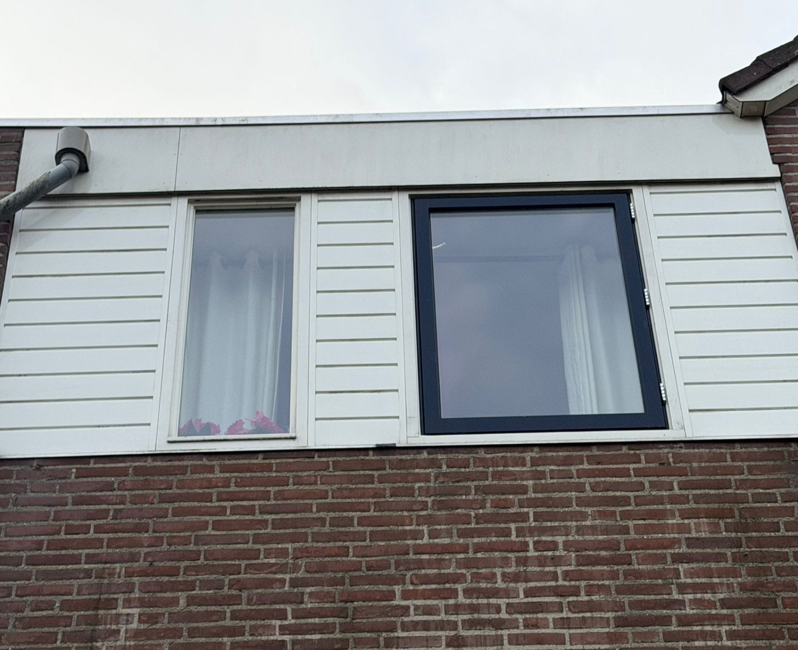
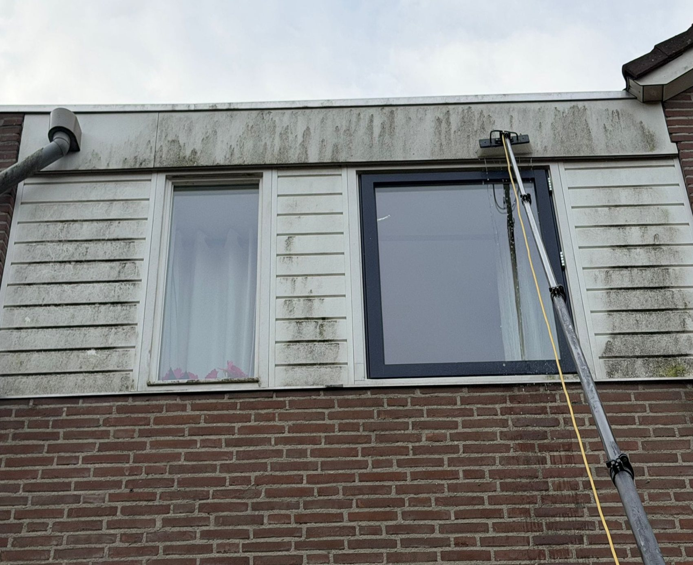
VoorNa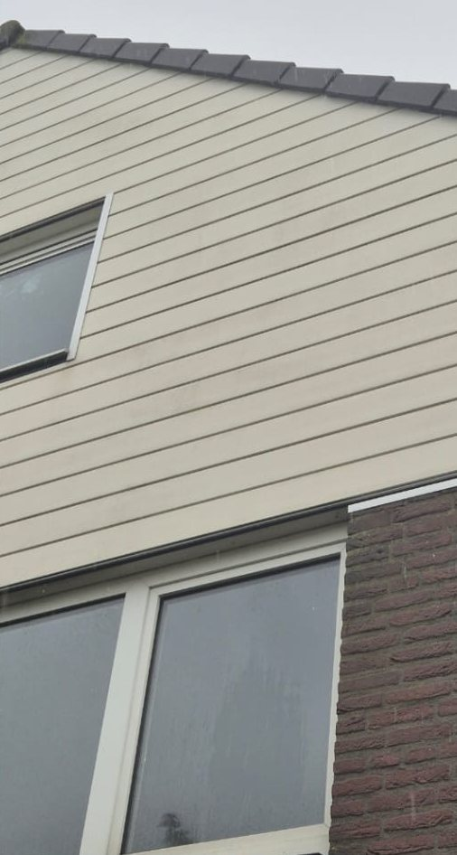
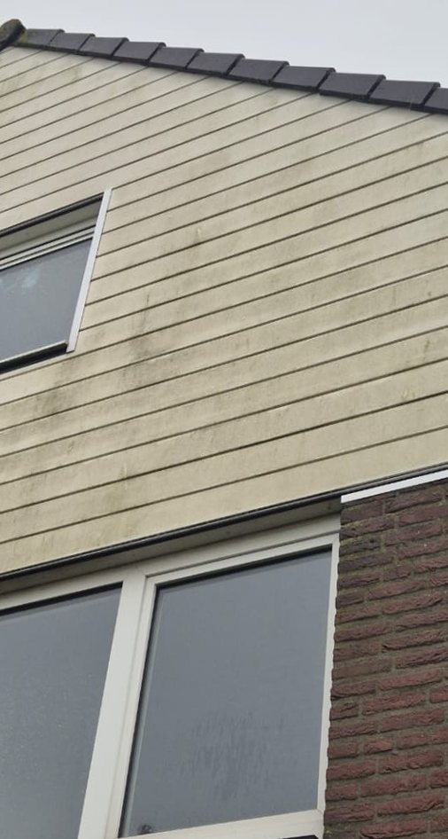
VoorNa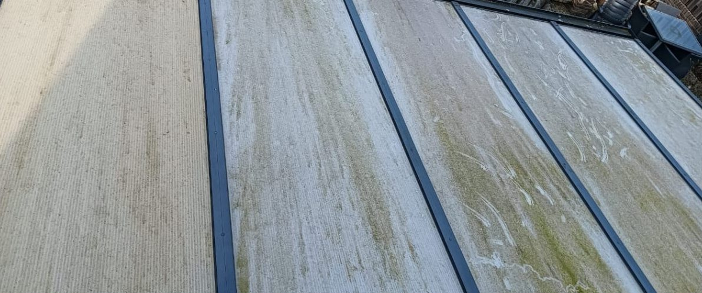
1Voor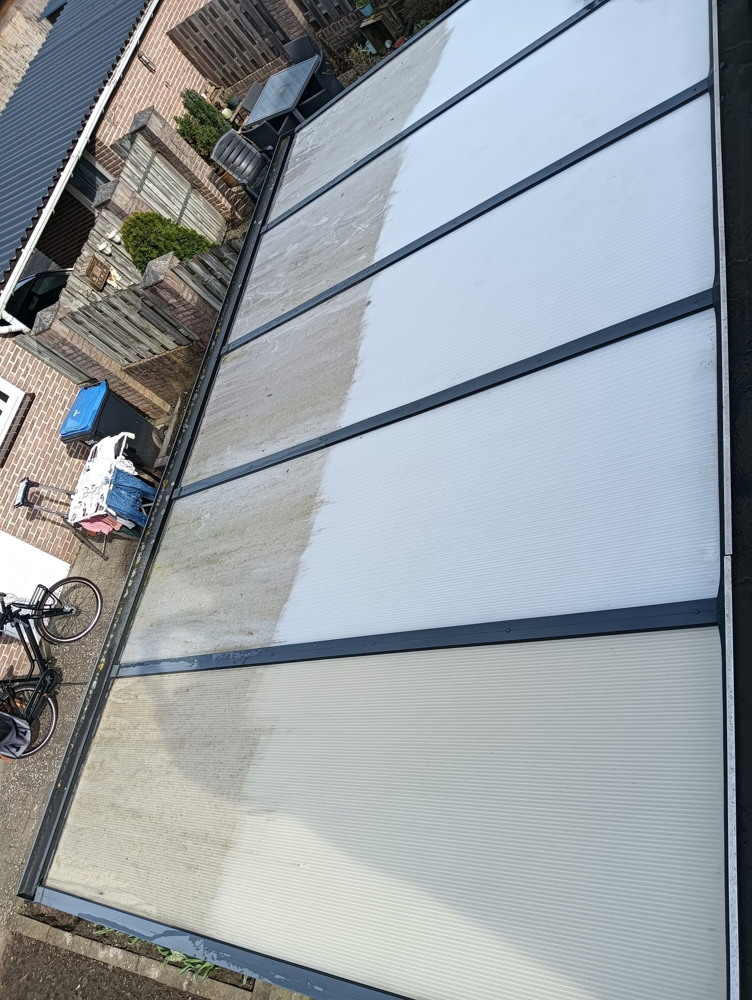
2Op de helft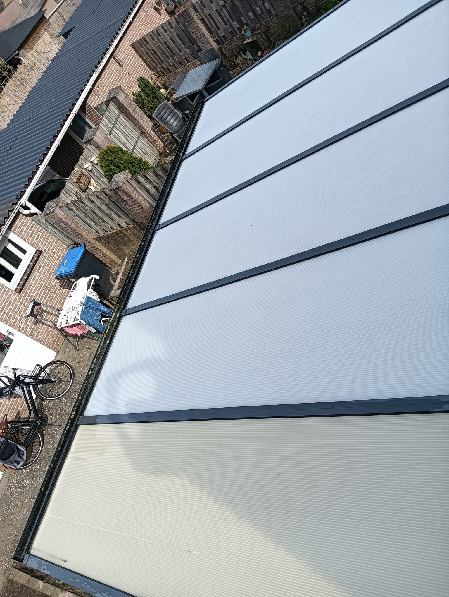
3Na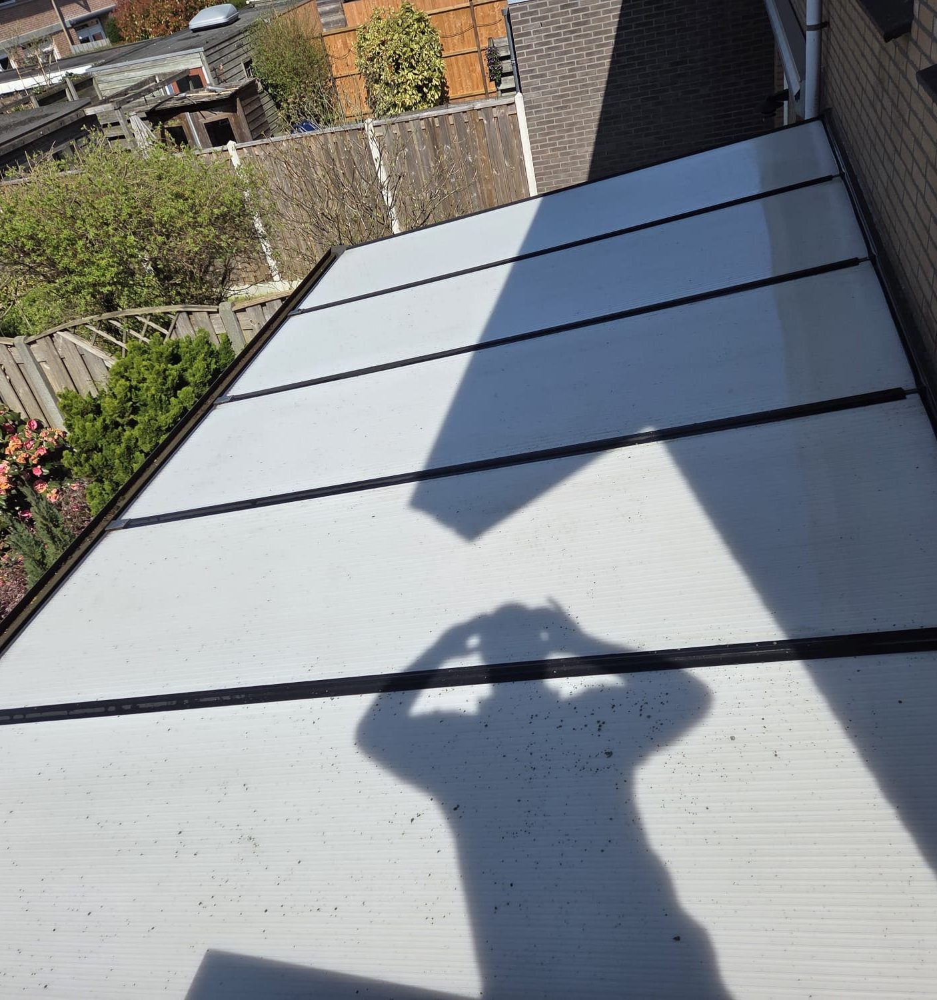
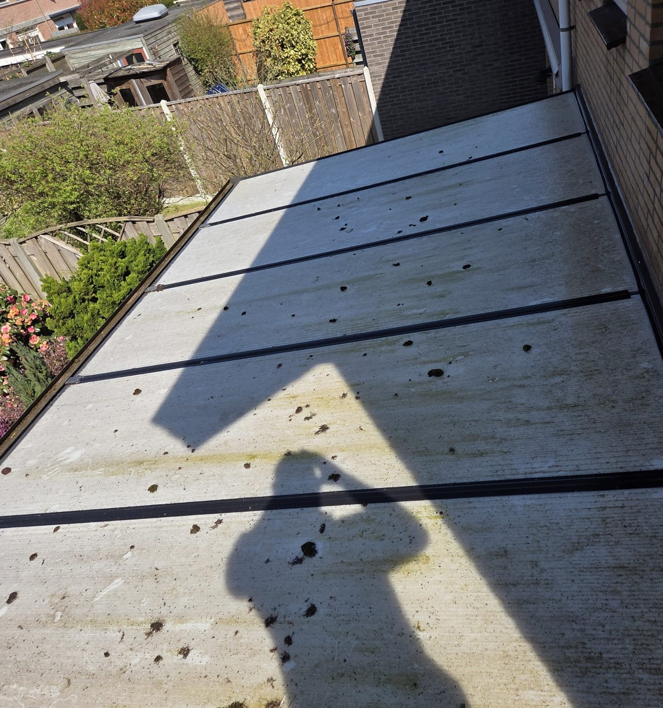
VoorNa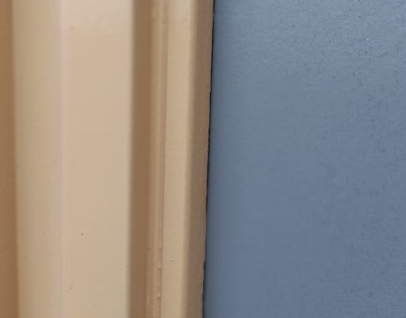
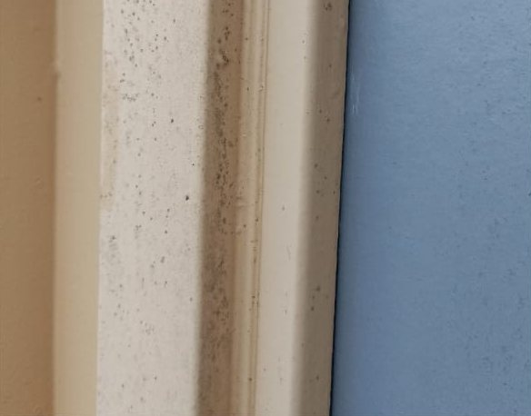
VoorNaBetrapt tijdens het werk: aan de ene kant nog vuil, aan de andere kant al schoon.
Na een mooie oplevering zorgt BNA cleaning nu periodiek voor de glasbewassing van vijf Domino's-filialen.
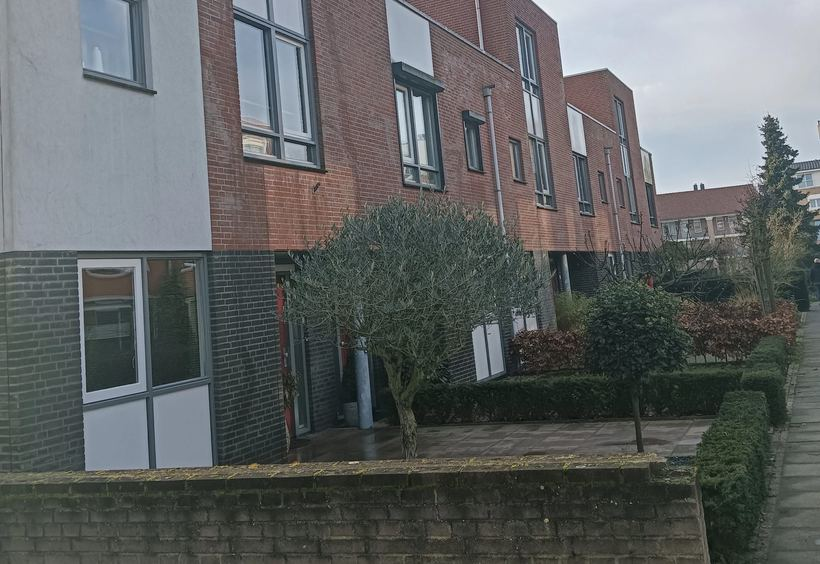
Hele straat in DrutenOok deze straat is weer voorzien van schone ramen.
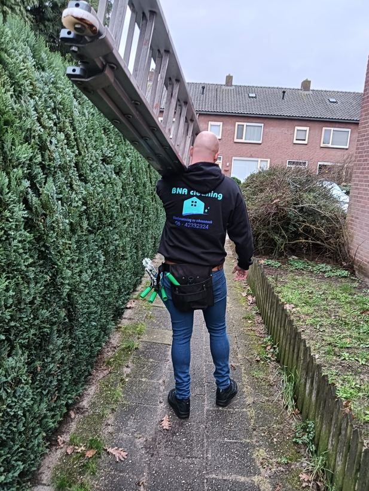
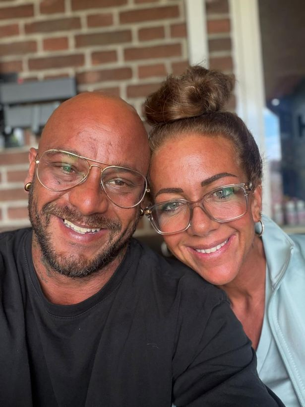
Dit is BNA cleaning. Benieuwd wat we aan uw ramen, panelen of gevel kunnen doen? Vraag vrijblijvend een offerte aan.